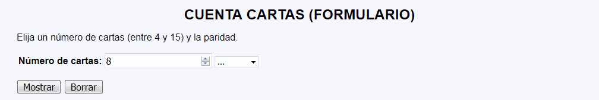
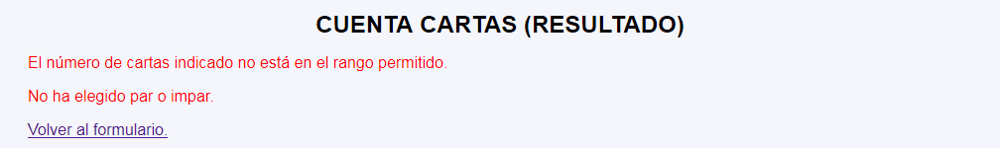
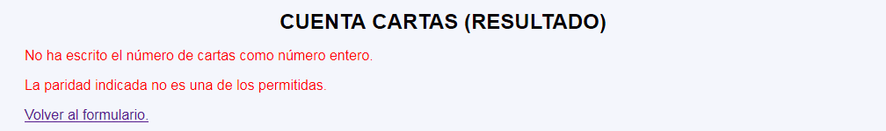
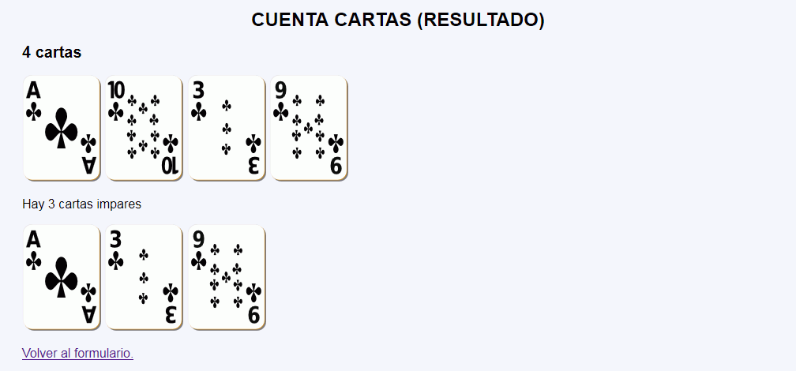

Cuenta cartas - Comentarios
- El programa tendrá dos páginas:
- La primera página muestra un formulario con dos controles:
- El número de cartas que se va a mostrar (entre 4 y 15).
- La paridad (par o impar) que se va a contar y mostrar.
- La segunda página mostrará:
- Si se han recibido valores incorrectos, los mensajes de error correspondientes.
- El número de cartas indicado por el usuario.
- Las imágenes de las cartas de tréboles del 1 al 10, al azar.
- La cantidad de cartas de la paridad seleccionada por el usuario.
- Las cartas con dicha paridad de entre las mostradas anteriormente.
- La primera página muestra un formulario con dos controles:
- Si se intenta acceder directamente a la segunda página sin pasar por la primera o si se envía a la segunda página información distinta a la esperada, se mostrarán mensajes de error con la información faltante o incorrecta.
- No se deben cambiar los nombres de los controles incluidos en las plantillas.
- Al actualizar la segunda página, se mostrarán cartas distintas, pero la misma cantidad y paridad.
- Capturas de pantalla de ejemplo:




